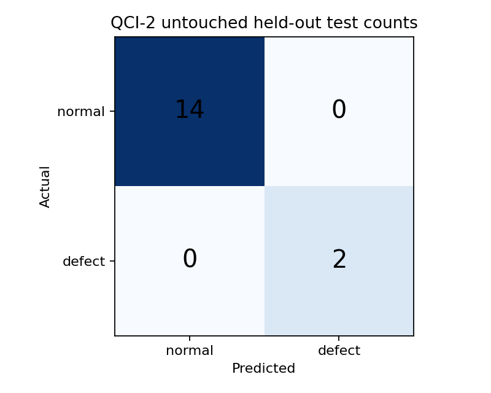
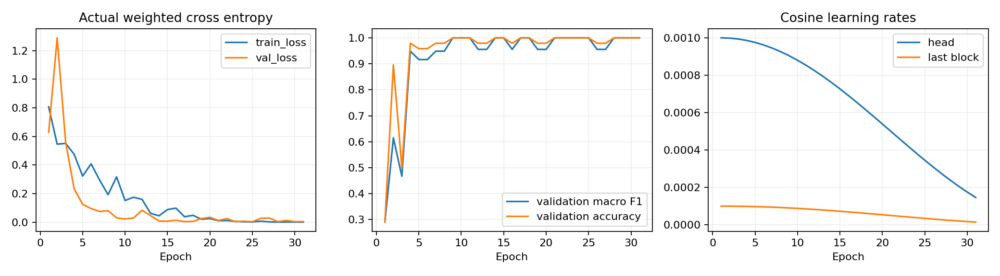
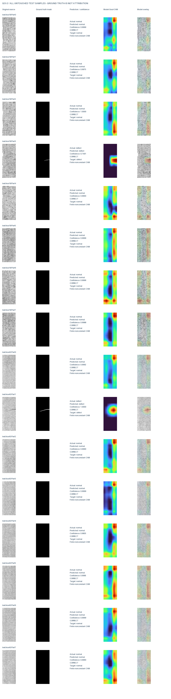

QCI-2 / Real local classifier and Grad-CAM
ResNet18 | 31 epochs | best epoch23 | splits302/48/16
Test accuracy1.0000, macroF11.0000. Only two positive test samples; no production-generalization claim.
QCI-2 32 passed; QCI-1 74 passed; root 279 passed/2 old CPU1 failures. RSS drift0.0697%.
Local noncommercial review complete. PR/access, commercial permission and prior repository numeric gates pending.
Actual focused pytest output
Command: "C:\Users\ehtis\Desktop\Textile Defect Detection\ESE_CPU1_Quantization\runtime\venv\Scripts\python.exe" -X utf8 -m pytest tests/test_qci2_classifier.py tests/test_qci2_dataset_adapter.py tests/test_qci2_registry.py -q --durations=5 ................................ [100%] ============================= slowest 5 durations ============================= 0.81s call tests/test_qci2_classifier.py::test_eval_determinism_scoped_hooks_and_offline 0.65s call tests/test_qci2_classifier.py::test_real_resnet_forward_backward_and_checkpoint_reload 0.64s setup tests/test_qci2_classifier.py::test_real_resnet_forward_backward_and_checkpoint_reload 0.60s call tests/test_qci2_classifier.py::test_invalid_target_class_is_controlled[2] 0.59s call tests/test_qci2_classifier.py::test_corrupt_or_missing_image_returns_failure[missing.png] 32 passed in 14.09s Exit code: 0
Actual held-out confusion matrix

Actual training history

Every test image: source, ground truth, prediction, model heatmap, overlay
